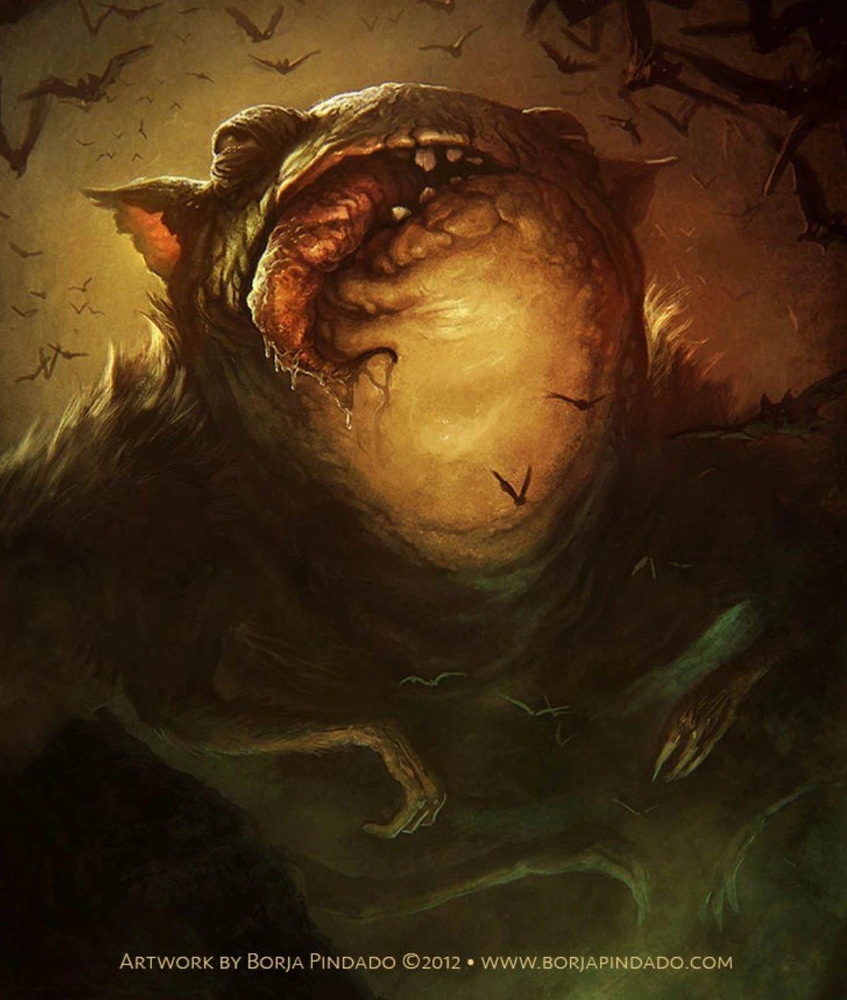

Tsathoggua ("El que susurra en la obscuridad")
Tsathoggua, el Durmiente de N'kai (también llamado Zhothaqquah y latinizado como Sadoqua) es un Primigenio mencionado por primera vez en el relato La historia de Satampra Zeiros de Clark Ashton Smith. Es, probablemente, la deidad más representativa de este autor.
APoco hay que decir del nombre de Tsathoggua ya que, en los nombres que Clark Ashton Smith daba a sus deidades, lo que generalmente buscaba era una sonoridad que evocara un lenguaje ultraterreno y extraterrestre. Esto hace que muchas de sus criaturas tengan algunos de los nombres más impronunciables del universo lovecraftiano.